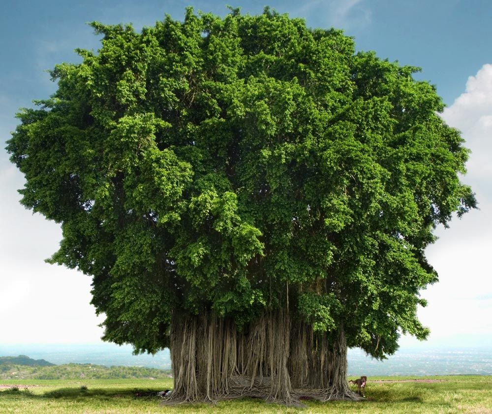

NATIONAL TREE:

The national tree of India is the Banyan tree, designated formally as Ficus benghalensis.
The tree is revered as sacred in Hindu philosophy. It is often a focal point of human establishment owing to its
expansive form and shade provided. The tree is often symbol of the fabled ‘Kalpa Vriksha’
or the ‘Tree of Wish Fullfillment’ as it is associated with longevity and has important medicinal properties.
The very size of the banyan tree makes it a habitat for a large number of creatures. For centuries the banyan tree
has been a central point for the village communities of India.Theese trees are a part of the fig family.The banyan tree is said to be a shelter for snakes.
The Banyan (Bargad) is the National tree of India - called the Indian fig tree(Ficus bengalensis) grow over a large area. One can see banyan tree through out India irrespective of region and climate, that might be the reason to consider it as national tree.
Banyan tree known in different names regionally, as Bargad, Bor, Ber, Ala, Nayagrodha, Bar, Vad, Vatnam, Bahupada, Peddamarri,VatVriksha, Marri Vrikshamu, Aal Maram, Vatavriksh, and Barh. The name was originally given to F. benghalensis and comes from India where early travellers observed that the shade of the tree was frequented by banias or Indian traders. Even today, the banyan tree is the focal point of village life and the village council meetings under the shade of this huge shade-giving tree.
Indian banyan root themselves to form new trees then give rise to more trunks and branches. Because of this characteristic & longevity, the Banyan tree is considered immortal & sacred and is an integral part of the myths and legends in India.